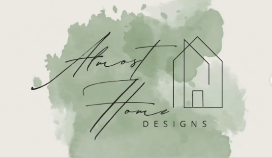

Remodel · Design · Handcraft · Read
Thoughtfully Designed.
Beautifully Made.
Interior design, remodeling and handcrafted pieces created to make home feel more like you.



From spaces to objects
We Design for Home.
Almost Home Designs brings remodeling, interior design, pottery and carpentry together under one thoughtful point of view—creating spaces and pieces that feel warm, functional and personal.
Meet Our Story →Our Services
Design. Remodel.
Transform.
From a single-room refresh to a complete transformation, we shape homes around the way people actually live.
Real projects
See What’s Possible.
BeforeAfter
The Shop
Made by Hand.
Made for Home.
Pottery, woodworking, home décor and gifts with the same warmth and character we bring to our spaces.


Books & Stories
Stories From Almost Home.
The Summer Switch Up is a children’s book by Mallory Deck, illustrated by Sadiqa Akhter. It explores big feelings, family, summer adventure and making memories.
“The goal is simple: make every room, object and story feel a little more like home.”
Start a project
Have a Space You’re Ready to Transform?
Let’s turn your vision into something you’ll love coming home to.
Book a Free Consultation →